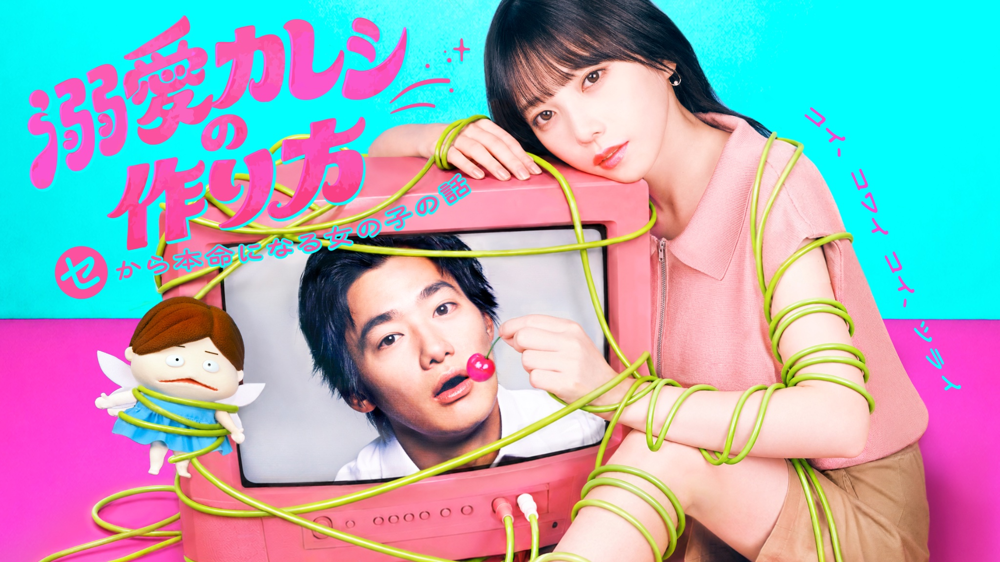

Dekiai Kareshi no Tsukurikata (2026)
溺愛彼氏の作り方

Sakura, seorang pegawai balai kota, memendam rasa pada rekan kerjanya yang lebih senior, Keisuke. Suatu malam, karena serangkaian kejadian tak terduga, Keisuke akhirnya berada di rumah Sakura, dan mereka pun menjalin ikatan—baik secara emosional maupun fisik... atau begitulah sangkaan Sakura.
Namun, keesokan harinya, Keisuke hanya membaca pesan Sakura tanpa membalasnya. Bahkan saat Sakura akhirnya berhasil mengajaknya bicara, Keisuke hanya berdalih bahwa ia sedang "sibuk." Tak sanggup lagi menanggung ketidakpastian itu, Sakura pun meminta kejelasan, namun justru mendengar kata-kata "Sebaiknya kita menjaga jarak."
Meski tahu Keisuke adalah pria brengsek, Sakura tetap tak sanggup membencinya. Lalu, di tengah keputusasaannya, sebuah boneka yang ia pungut di pinggir jalan tiba-tiba berbicara kepadanya, "Tidak boleh ngeseks jika tidak pacaran!"
Di bawah omelan pedas Zakuchan, peri cinta yang tiba-tiba hadir dalam hidupnya—Sakura mulai menjalani serangkaian pelajaran cinta yang ketat demi satu tujuan: naik status menjadi "cinta sejati" Keisuke!